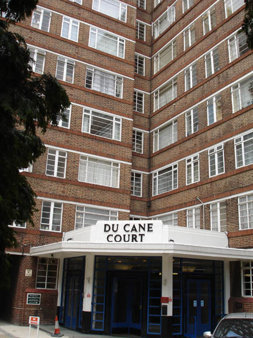
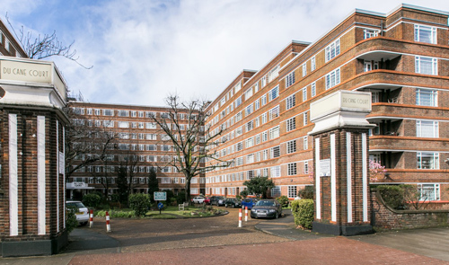
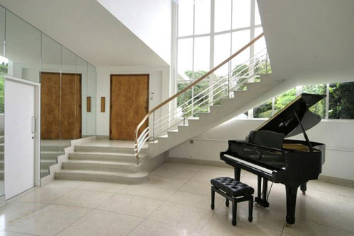
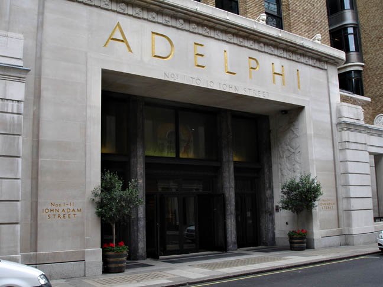

Du Cane Court, Balham used as the location for Gordon Halliday's apartment.

Entrance to Du Cane Court.

The staircase at St Ann's Court, Chertsey in Surrey used as the entrance to 'Gordon Halliday's apartment'. (Also used in 'Mrs McGinty's Dead' and 'Three Act Tragedy'). Built in 1936 by Raymond McGrath who designed the interiors of BBC Broadcasting House used in 'The Affair at the Victory Ball').

The Adelphi Building used as 'The Ritz' where Armand de la Rochefort stays. (Also used in 'The Theft of the Royal Ruby').